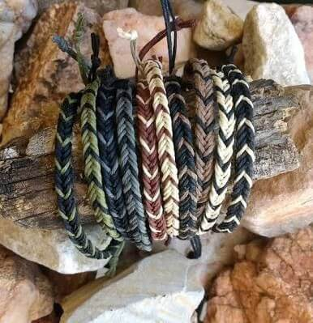

Que son las manillas de hilo?
Las manillas de hilo son pulseras artesanales hechas a mano, que combinan creatividad y tradición. Usando hilos de colores y técnicas simples de nudos, se pueden crear diseños únicos que reflejan tu estilo personal. Son el accesorio perfecto para expresar tu individualidad y también para regalar, ya que cada manilla lleva consigo el toque especial de quien la crea. ¡Con unos pocos materiales, puedes transformar hilos en piezas de arte que adornarán tus muñecas!

Que materiales vas a necesitar
Vale, vas a necesitar lo siguiente. claro que dependiendo del estilo que escojas para tu manilla, vas a utilizar todos lo materiales, pero si son las de dos hilos, entonces sera mas breve.
Para hacer manillas de hilo, necesitarás los siguientes materiales:
- Tipos de hilos recomendados: Algodón, seda, nylon, o hilo encerado.
- Variedad de colores: Elige una paleta que te guste para combinar en tus diseños.
- Tijeras: Para cortar los hilos a la longitud adecuada.
- Cinta adhesiva o una tabla de nudos: Para sujetar los hilos mientras trabajas y mantenerlos en su lugar.
- Regla o cinta métrica: Para medir la longitud del hilo y asegurar que las manillas tengan el tamaño correcto
- Opcional: Cuentas, abalorios o charms;Para decorar las manillas y añadirles un toque personalizado.
Estos son los materiales básicos que te permitirán empezar a crear tus propias manillas de hilo.
Tutorial básico: Cómo hacer una manilla de hilo
- Elige tus hilos: Selecciona dos o más colores que te gusten. Corta cada hilo de aproximadamente 60 cm de largo.
- Prepara la base: Une los hilos con un nudo en la parte superior y sujétalos a una superficie con cinta adhesiva o en una tabla de macramé.
- Empieza a trenzar: Elige un patrón simple como el "nudo de espiral". Para este, toma el hilo más a la izquierda, pásalo sobre el siguiente hilo y luego por debajo. Repite el mismo nudo a lo largo de toda la manilla.
- Finaliza la manilla: Una vez alcanzada la longitud deseada, ata los extremos con un nudo fuerte. Si deseas, añade un cierre o simplemente haz un lazo con los hilos sobrantes.
¡Y eso es todo! Ahora puedes probar diferentes colores y patrones para personalizar tus manillas.
Galería de Diseños
Inspírate con estos hermosos diseños de manillas de hilo:
.jpeg)
.jpeg)
.jpeg)
Consejos y Trucos para Mejorar tus Diseños
- Practica nudos básicos: Antes de probar patrones más complicados, asegúrate de dominar los nudos simples como el nudo plano y el nudo espiral.
- Usa una tabla de macramé: Facilita mucho el trabajo, ya que los hilos quedan bien sujetos.
- Mezcla texturas: Combina diferentes tipos de hilos (seda, algodón, nylon) para crear contrastes interesantes en tus diseños.
- Personaliza con abalorios: Añadir cuentas o charms puede darle un toque único a tus manillas.